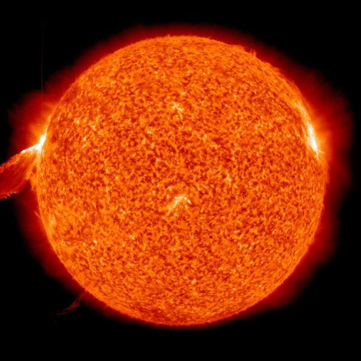

.png)
EL SOL: NUESTRO ASTRO REY

"El Sol es el motor de la existencia en el planeta de la vida y el generador de los climas en otros planetas".
El llamado “astro rey” es el centro del sistema solar en el que se encuentra la Tierra. Es el responsable de proveer luz, calor y energía a los seres vivos. Es, desde esta perspectiva, el motor de la existencia en el planeta de la vida y el generador de los climas en otros planetas.
En realidad, el Sol es una estrella más en el vasto e insondable universo. Únicamente es esencial para el sistema solar en el que la Tierra se circunscribe. Sin embargo, es la estrella más grande de este sistema y posee características que lo hacen muy complejo e interesante.
CARACTERÍSTICAS DEL SOL
- Diámetro medio: 1.392.000 Km.
- Rotación: 609 horas (varía con la latitud)
- Velocidad (respecto a estrellas cercanas): 70.000 Km./hr
- Temperatura: 16 millones de ºC (centro)
- Ciclo solar: 11,4 años
- Composición: gas; fotosfera: Hidrógeno (90,9%); Helio (8,9%); otros elementos (0,2%)

PARTES DEL SOL
| Partes del sol | Descripción |
|---|---|
| Núcleo | El núcleo del Sol es la parte más caliente de todas pues su temperatura supera los 15.7 millones de grados centígrados. Es aquí donde las reacciones de fusión nuclear tienen lugar al convertirse el hidrógeno en helio y liberar energía. Entonces los fotones (partículas de luz) llevan la energía a la zona convectiva y posteriormente la energía se transfiere a la superficie. Durante 1 segundo de fusión nuclear se libera una cantidad de energía superior a la que libera la explosión de cientos de miles de bombas de hidrógeno. |
| Zona radiante o radiativa | Es la zona que rodea al núcleo y comprende el 45 por ciento de su radio. El calor es menos intenso que en el núcleo y es aquí donde se lleva a cabo la radiación térmica, el proceso de transferencia de energía desde el núcleo. |
| Zona de transición (tacoclina) | Es la capa que separa la zona radiante y la zona convectiva. Es resultado de la rotación diferencial del Sol. Una hipótesis sugiere que el campo magnético del sol es generado por un dínamo magnético dentro de esta zona. |
| Zona convectiva | Es la capa superior del interior solar, se extiende a unos 200,000 kilómetros por debajo de la superficie del Sol. Aquí los movimientos de los gases y las burbujas de plasma caliente se mueven hacia arriba, por lo que se transfiere energía a la superficie. |
| Fotosfera | Es la superficie visible del Sol. De hecho, la luz solar proviene principalmente de ésta. |
| Manchas solares | Aparecen cuando la superficie solar experimenta alguna perturbación y entre los resquicios de la granulación solar se originan unos puntos llamados poros que se multiplican. La ampliación de los poros origina las manchas solares, que son básicamente zonas oscuras formadas por un núcleo oscuro rodeado de una aureola grisácea. |
| Prominencia solar | Es una forma gaseosa y brillante que se extiende desde la superficie solar hacia el exterior. |
| Atmósfera | Es la zona que se encuentra sobre la fotosfera. |
| Cromosfera | Se estima que tiene un espesor de 10,000 kilómetros y está compuesta por espículas (lenguas de gas). Es sede de fenómenos importantes. |
| Corona solar | Se vislumbra como una aureola plateada y tenue alrededor del disco solar, compuesta por polvo, electrones e iones. |
| Protuberancias solares | Son chorros de gas que son proyectados desde la cromosfera hacia el exterior. Están presentes en todas partes de la atmósfera. |
| Región de transición solar | Es la región entre la cromosfera y la corona solar. El calor fluye desde la corona y produce esta zona en la cual la temperatura cambia rápidamente. |